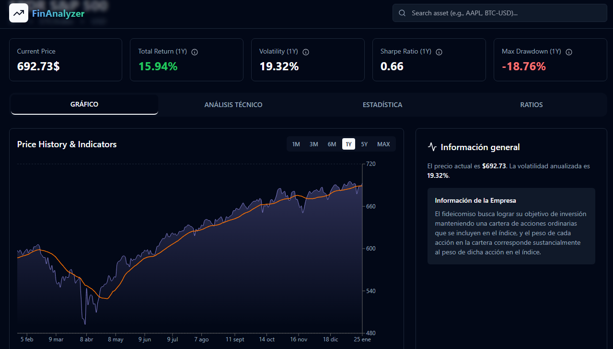

Proyectos
Una selección de mis trabajos en análisis financiero, automatizaciones e IA

Análisis de precios de departamentos en CABA utilizando Machine Learning para predecir precios y obtener insights sobre el mercado inmobiliario.
Tecnologías: Python, Pandas, Numpy, Matplotlib, Scikit-learn, Statsmodels, Cloudflare, Beautiful Soup.
Este proyecto permite visualizar el precio real de los departamentos en CABA y compararlo con el precio predicho por el modelo de Machine Learning.
